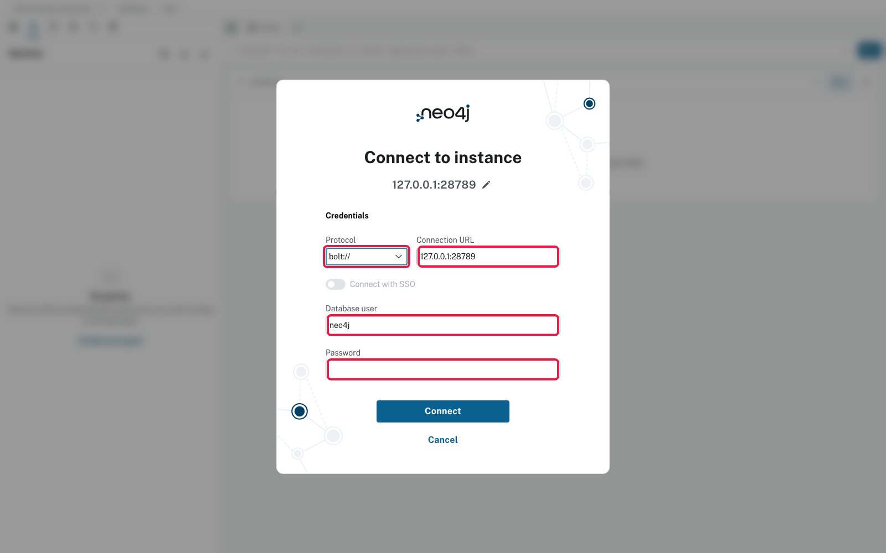
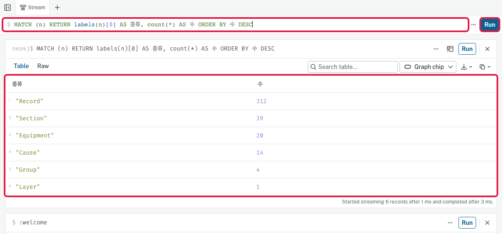
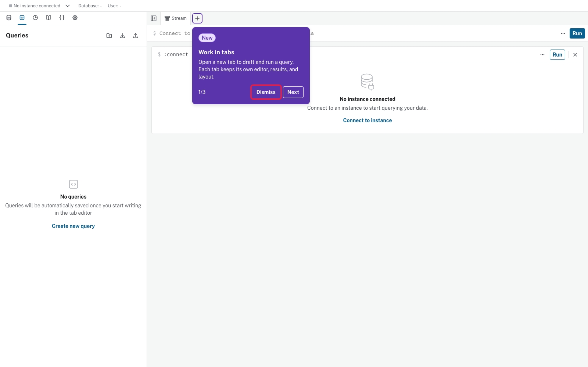
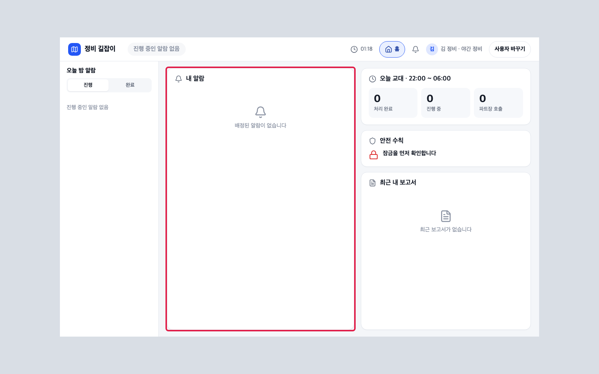

이 컴퓨터에 띄웠으면: 브라우저 http://127.0.0.1:28576 · 연결 창 Connection URL 127.0.0.1:28789
AWS 서버(문서 11)를 터널로 보면: 브라우저 http://127.0.0.1:58576 · 연결 창 Connection URL 127.0.0.1:58789(문서 11 8번 표)
연결 창 칸 넷(Connection URL을 먼저 → Protocol bolt:// · Database user · Password) → 첫 상태 수 표 → 승인 뒤 바뀐 그래프는 문서 06 5번 쿼리
DB
처음 켤 때 하는 일(저절로)
맡는 컨테이너
기록 DB(trace-db)
계정 · DB · 표 만들기(migration 차례대로)
trace-db-init
지식 그래프(Neo4j)
시드 이력 → 그래프 층 → 첫 Pack 준비
kg-init
앱 DB(app-db)
표 · 설비 · 시드 · 메인 시나리오 첫 상태 · 예시 이력
app-init · app-examples
1기록 DB 준비 확인 터미널
할 일
trace-db-init 끝 줄을 봄
docker compose logs trace-db-init --tail 20
보일 것
오류 없이 끝(Exited 0) · 몇 줄 안 되고 끝 줄은 'migrate llmopsagent_test: 0001 …'처럼 migration 줄
막히면
password authentication failed → .env의 TRACE_DB_PASSWORD를 처음과 다르게 바꿨음 · 문서 09 '처음부터 다시'
2지식 그래프 준비 확인 터미널
할 일
kg-init 끝 줄에 KG_INIT ok가 있는지 봄
docker compose logs kg-init --tail 5
보일 것
KG_INIT ok AT=… FIRST_PACK_TAG=first … 한 줄
막히면
끝 코드 2 = 입력 값 틀림(.env의 AT 형식) · 3 = 그래프 DB 연결 안 됨(neo4j가 아직 준비 중 → docker compose up -d 한 번 더) · 4 = 적재 실패(로그 앞쪽을 보고 문서 10)
3Neo4j(그래프) 보기 — 연결 · 첫 상태 수 브라우저
할 일
브라우저 주소 — 이 컴퓨터: http://127.0.0.1:28576(번호는 .env의 NEO4J_HTTP_PORT) / AWS 서버를 터널로 볼 때: http://127.0.0.1:58576(문서 11 8번 표)
처음 열면 'Work in tabs' 안내(1/3)가 뜰 수 있음 → Dismiss 한 번(안내 셋이 함께 닫힘 · 아래 셋째 그림)
연결 창 'Connect to instance'의 칸 넷 — Connection URL을 먼저 이 컴퓨터면 127.0.0.1:28789(번호는 .env의 NEO4J_BOLT_PORT) / 터널이면 127.0.0.1:58789로 친 뒤에 Protocol을 bolt://로 고름(차례가 반대면 Protocol이 neo4j://로 되돌아감) · Database user 칸에 neo4j · Password 칸에는 .env NEO4J_AUTH 줄의 / 뒤 글자 → Connect
위 입력 칸에 아래 쿼리를 붙여 넣고 실행(▶) → 결과 표를 아래 '첫 상태 수' 표와 견줌
MATCH (n) RETURN labels(n)[0] AS 종류, count(*) AS 수 ORDER BY 수 DESC
보일 것
종류별 수 표 — 처음 상태에서 Record 312 · Section 39 · Equipment 20 · Cause 14 · Group 4 · Layer 1
막히면
연결 창이 'ServiceUnavailable' · 연결 안 됨 → Connection URL 번호가 브라우저 주소와 짝이 맞는지(28576 ↔ 28789 · 터널이면 58576 ↔ 58789) · 터널 창이 켜져 있는지(문서 11 8번) · 'authentication failure' → Password는 NEO4J_AUTH 줄의 / 뒤만(앞 neo4j/는 빼고)
알아 둘 것
승인 뒤 그래프가 바뀐 것(새 층 · 예외 관계)을 보는 쿼리는 문서 06 5번입니다 — 같은 화면 · 같은 연결에서 쿼리만 바꿉니다.

Neo4j 연결 창 · 쿼리와 결과 표 · 처음 안내 · 빨간 테: Protocol · Connection URL · Database user · Password · Connect / 쿼리 칸 · 실행 ▶ · 결과 표 / Work in tabs 안내의 Dismiss

Neo4j 연결 창 · 쿼리와 결과 표 · 처음 안내 · 빨간 테: Protocol · Connection URL · Database user · Password · Connect / 쿼리 칸 · 실행 ▶ · 결과 표 / Work in tabs 안내의 Dismiss

Neo4j 연결 창 · 쿼리와 결과 표 · 처음 안내 · 빨간 테: Protocol · Connection URL · Database user · Password · Connect / 쿼리 칸 · 실행 ▶ · 결과 표 / Work in tabs 안내의 Dismiss
첫 상태 수 — 3번 쿼리 결과가 이렇게 나오면 정상
종류
수
뜻
Record
312
시드 정비 이력
Section
39
매뉴얼 절(점검 · 조치)
Equipment
20
설비
Cause
14
원인
Group
4
증상 묶음
Layer
1
그래프 층(첫 층 · 승인 뒤 새 층이 생김 — 문서 06 5번)
수가 다르면 시연을 한 뒤의 스택입니다 — 첫 상태는 문서 09.
4앱 DB 확인 브라우저
할 일
정비자 앱에 로그인(문서 05 1번) → 홈이 열리는지
보일 것
정비자 홈 — 내 알람 · 오늘 교대 · 안전 수칙 · 최근 내 보고서(처음엔 모두 비어 있음)

정비자 앱 홈 · 빨간 테: 내 알람 칸
5처음 상태로 되돌리기 터미널
할 일
시연을 여러 번 한 뒤 처음 상태로 — 문서 09의 초기화 대본
모든 DB를 처음부터 다시(프로젝트 · 기록 · 그래프 모두 지워짐) — 먼저 .env.agentops를 옮기고 아래 세 줄
mv .env.agentops .env.agentops.old-$(date +%Y%m%d%H%M) # 앞 프로젝트 연결 줄 옮겨 두기(없으면 오류 글만 나고 괜찮음)
docker compose down -v
docker compose up -d
알아 둘 것
.env.agentops에는 앞 프로젝트의 id가 들어 있어, 그대로 두면 새 AgentOps가 없는 프로젝트에 연결됩니다. 옮긴 뒤 문서 04를 처음부터 다시 하면 7번 대본이 새로 만듭니다. 앞 자료를 지우지 않고 남기려면 문서 09 3번의 '남기는 길'을 씁니다.
다 됐는지
☐ trace-db-init · kg-init이 Exited (0) · KG_INIT ok